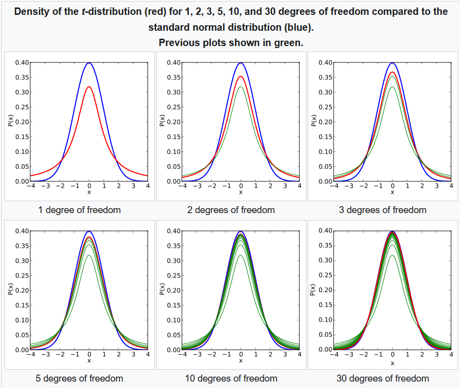

Before proceeding to probability distribution such as: Binomial, Beta Distribution, Poisson Distribution, Exponential, and Gamma Distribution, it is essential to discuss its two types: discrete and continuous, and degree of freedom before Chi-Squared distribution, student t-distribution, and f-distribution
Discrete Probability Distribution :
A discrete probability distribution is deifned on a set of discrete or countable values, and the probabilities of each value are given by the Probablity Mass Function (PMF) denoted by `P(X = x)`. The PMF specifies the probabilities that the random variable `X` takes the value `x`. Discrete probability distributions are used to model variables that are distinct, finite and separate such as number of kids in a family
The properties of a discrete probability distribution are :
1. The sum of probabilities over all possible values of `X` is equal to 1 i.e, `∑ P(X = x) = 1`
2. The probabilities are non-negatives `P(X = x) \ge 0` for all `x`
3. The probability of each value of `X` is between 0 and 1 i.e, `0\leP(X=x)\le1` for all `x`
Continuous Probability Distribution :
A continuous probability distribution id defnied on a continuous range of values, and the probabilites of ech value are given by the Probability Density Function (PDF) denoted by `f(x)`. The PDF specifies the probability density at each point `x`.
The properties of a continuous probability distribution are :
1. The total area under the curve of the PDF is equal to 1 i.e, `\intf(x)dx=1`
2. The PDF is non-negative `f(x)\ge0` for all `x`
3. The probability of any particular value is zero. `P(X=x) = 0` for all x
4. The probability of `X` falling within a range of values is given by the integral of the PDF over that range `P(a\leX\leb) = \int_{a}^b f(x) dx`
Continuous probability distributions are used to model variables that can take on any value within a range, such as time, and temperature. This is another difference, in discrete distribution, probablities are assigned to each possible outcomes, whereas in continuous distribution, probabilities are assigned to interval of values.
It is a discrete probability distribution that describes the number of successes in fixed number of independent Bernoulli trails, where each trail has a Boolean-valued outcome:
success (with probability `p`) or failure (with probability `q = 1-p`)
The Probability Mass Function (PMF) of Binomial distribution is given by :
`P(X=k) = `(n \choose k) `p^k(1-p)^(n-k)`
for `k = 0,1,2,...,n` where
`n` is nnumber of trails, `p` is number of successes, `X` is the random variable that represents the number of successes in n trials, and `k` is integer representing number of successes, and (n \choose k) `= \frac{n!}{k!(n-k!)}`
The Cumulative Distribution Function (CDF) of Binomial distribution is given by :
`f(x) = P(X \le x) = \sum_(k=0)^x` (n choose k) `⋅ p^k ⋅ (1-p)^(n-k)`
The mean of binomial is `μ = np` and the variance of binomial distribution is `\sigma^2 = np(1-p)`. In binomial distribution, As the number of trials n increases, it becomes more symmetrical and approaches a normal distribution.
The beta distribution is a continuous probability distribution that is often used to model the probability of success or failure in a binomial experiment. It is defined on the interval `[0,1]`, and has two parameters `\alpha` and `\beta` which control its shape and location. The PDF of beta distribution is given by:
`f(x:\alpha, \beta) = x^(\alpha-1)(1-x)^(\beta-1) \frac{1}{(B(\alpha,\beta))} `
where,
1. `x` is the random variable representing the probability of success
2. `\alpha` and `\beta` are the shape paramters of the distribution.
3. `B(\alpha, \beta)` is the beta function, which is used to ensure that the total probability of the distribution to `1`
Mean and variance of the beta distribution are given by :
`μ = \frac{\alpha}{α + \beta}`, `\sigma^2 = \frac{(α ⋅ \beta)}{[(α + \beta)^2 ⋅ (α + β + 1)]}`
The shape of the beta distribution depends on the values of the shape parameters `alpha` and `\beta`. When `α = β = 0`, the distribution is uniform distribution, with equal probability assigned to all values between 0 and 1. When `α \ge \beta`, the distribution is skewed towards the right, with a mode close to `1`. When `α \le \beta`, the distribution is skewed towards the left with a mode close to 0
The poisson distribution is a discrete probability distribution that describes the number of events that occur in a fixed interval of time or space, given the average rate of occurence. It is used to model a wide range of real-world phenomena, such as accident at a busy intersection in a day. It is particularly useful for situations where the events are rare or infrequent but can occur at any time.
The PMF of a poisson distribution is given by:
`P(X=k) = \frac{(e^(-\lambda) ⋅ \lambda^k)}{k!}`
where,
1. `k` is the number of events that occur in the interval.
2. λ is the expected number of eventa that occur in the interval
The Mean and Variance of the poisson distribution are both equal to `lambda`.
The key thing in poisson distribution is that the events are independent of each other, and occur at a constant rate over time and space.
In other words, the probability of an event occuring does not depend on when and where the previous event occured. This is known as Poisson Process
It is a continuous probability distribution that decribes the time between two consecutive events in a Poisson Process. The Exponential distribution is mostly used to model the lifetime of a product or the time until a failure occurs in a system.
The probability density function (PDF) of exponential distribution is given by :
`f(x) = \lambdae^(-\lambdax)` for `x \ge 0`
`f(x) = 0` for `x \lt 0`
where,
`\lambda` is rate paramter i.e, average number of events occuring per unit of time
`x` is time elapsed since last event
The Cumulative Distribution Function (CDF) of exponential is given by :
`f(x) = 1 - e^(-\lambdax)` for `x \ge 0`
`f(x) = 0` for `x \lt 0`
Alternative Parameterization
Exponential distribution, sometimes, can parameterized in terms of the scale parameter `β = \frac{1}{\lambda}`, then :
PDF `f(x) = \frac{1}{\beta} ⋅e^(\frac{-x}{\beta})` for `x \ge 0`
`f(x) = 0` for `x \lt 0`
CDF `f(x) = 1 - e^(\frac{-x}{\beta})` for `x \ge0 `
`f(x) = 0` for `x \lt 0`
The mean and variance of Exponential Distribution are: `μ = \frac{1}{\lambda}` and `\sigma^2 = \frac{1}{\lambda^2}`, respectively
It is a continuous probability distribution, mostly used to model the sum of independent exponentially distributed random variables. The Gamma Distribution is defined by two parameters: `\alpha` shape parameter and `\beta` rate parameter.
The Probability Density Function (PDF) of Gamma Distribution is given by :
`f(x; \alpha, \beta) = \frac{\beta^\alpha}{Γ(\alpha)}x^(α - 1)e^(-\betax)` for `x \gt 0` `\alpha, β \gt 0`
where,
`x` is a non-negative real number, `Γ(α)` is the gamma function, and `α` and `β` are the shape and rate parameters, respectively. The PDF is defined for `x\ge 0`.
The Gamma Function is defined as: `Γ(a) = \int_{0}^∞t^(α - 1) e^(-t) dt` For all positive integers, `Γ(\alpha) = (α - 1)!`
The cumulative distribution function (CDF) of the Gamma distribution is given by:
`F(x; α, β) = \frac{1}{Γ(α)} * γ(α, βx)`
where,
`γ(α, βx)` is the lower incomplete gamma function, defined as: `γ(α, βx) = \int_{0}^x t^(α - 1) e^(-β t) dt`
The Mean of Gamma Distribution is: `μ = \frac{\alpha}{\beta}` and variance is: `\sigma^2 = \frac{\alpha}{\beta^2}`.
The shape parameter `\alpha` determines the shape of the distribution, while the rate parameter β determines the rate at which the distribution decays.
As α increases, the Gamma distribution becomes more peaked and skewed to the right, while as β increases, the distribution becomes more concentrated around the mean.
Degree of Freedom
Degree of freedom (df) is the number of independent observations or sample values that go into estimating a parameter or testing a hypothesis.
Mathematically, the degree of freedom (df) is defined as the number of values in a sample that are free to vary after certain restrictions have been imposed.
For example, if we have a sample of size `n`, and we know the sample mean, then there are `n-1` degrees of freedom remaining because we can calculate any `n-1` values in the sample and the mean constraint will tell the `n^(th)` value.
It is continuous probability distribution widely used in hypothesis testing and goodness-of-fit observation. It has just one parameter: a positive integer `k` specifying degree of freedom
If `Z_1, ..., Z_k` are independent standard normal randon variable, then sum of their squares i.e, `Q = \sum_{i=1}^k Z_i^2` is distributed according chi-squared distribution with `k` degree of freedom, usually denoted as `Q ~ X^2(k)`. This is why Chi-Squared distribution is used because in the cases of hypothesis testing when the sample size `n` increases, the sampling distribution start to approach normal distribution.
Therefore, in machine learning, the chi-squared test can be used to evaluate the relevance of a feature by calculating the dependence between the feature and the target variable.
Features with a high chi-squared value are considered to be more relevant, and can be selected for further analysis.
Similarly, it can be used in model evaluation - to test whether the difference between the observed and expected values is statistically significant.
The probability density function (PDF) of Chi-Squared is given as:
`f(x;k) = \frac{x^(k/2 -1)e^(-x/2)}{2^(k/2)Γ(k/2)}` for `x\gt0` and PDF is `0` otherwise
It is another continuous probability distribution. It arises in statistics, when the mean of a normally distributed population in situations where the sample size is small and the populations standard deviation is unknown. It is used in assessing statistical significance, and creating confidence interval.
If we take a random sample of `n` observations from a normal distribution, then the t-distribution with `ν = n - 1` degrees of freedom can be defined as the distribution of the location of the sample mean in relation to the true mean, divided by the sample standard deviation, and then multiplied by the standardizing factor of `\sqrtn`. Using the t-distribution, then, allows us to create a confidence interval for the true mean.
The Probability Density Function (PDF) of the Student's t-distribution with `v` degree of freedom is given by:
`f(x;v) =\frac{Γ(\frac{v+1}{2})}{\sqrtvπ Γ(\frac{v}{2})} (1 + \frac{t^2}{v})^(-\frac{v+1}{2})`
Key things on student's t-distribution:
1. Its PDF is symmetric around zero.
2. Its overall shape resembles the bell shape of a normally distributed variable with mean 0 and variance 1, except that it is a bit lower and wider.
3. As the number of degrees of freedom grows, the t-distribution approaches the normal distribution with mean `0` and variance `1`. For this reason `v` is also known as the normality parameter.

F-Distribution is another continuous probability function, used in analysis of variance (ANOVA) and other F-tests. It is a ratio of two chi-squared distribution with degree of freedom as parameter given below:
`X = \frac{U_1//d_1}{U_2//d_2}`
where `U_1`, and `U_2` are chi-squared distributions with `d_1` and `d_2` as their degree of freedom, respectively. Also, similar to student t-distribution as degree to freedom start to increase, distribution starts to look like normal distribution.
The probability density function (PDF) of f-distribution is given by:
`f(x;d_1, d_2) = \frac{\sqrt\frac{(d_1x)^(d_1) d_2^(d_2)}{(d_1x +d_2)^(d_1+d_2)}}{xB(\frac{d_1}{2}, \frac{d_2}{2})}`